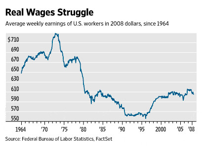
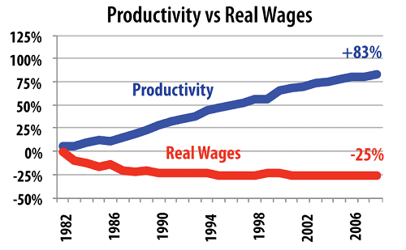
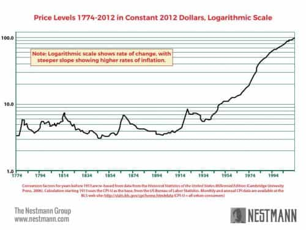
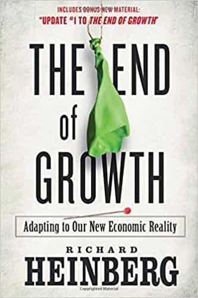

is an aspiring philosopher king, living the dream, travelling the world, hoarding FRNs and ignoring Americunts. He is a European at heart, lover of Latinas, and currently residing in the USA.


After the two world wars ended, the European nations which molded the very civilization the world enjoys today, retreated in prominence, as America rose in wealth and power.
In the post-war period, a new economic model emerged. One based on debt, not savings and wealth. America in 1960 was the world’s largest creditor, became a debtor nation in 1985, and is now the world’s largest debtor.
Central banks manufacture credit, which is then lent to the public through various means (in the US, this is done by the Federal Reserve issuing Treasury Notes, which must be repaid with interest).
The interest used to repay these obligations will be created by future treasury notes, as the total amount of currency today does not exist to extinguish the issued debt. In order to sustain this system, an implicit requirement is perpetual growth.

While there are still comparatively many economic opportunities in America today, and indeed I consider its economic opportunities the #1 benefit of living in America, real wages peaked in the 1960s. We are experiencing a gradual decline.
The direct effects of this new economic system are (1) decreasing real wages (2) societal upheaval and (3) globalism.
The modern globalist capitalist economic model values sales and revenue above all, no matter the consequences. The goal is to earn more and more wealth and power for the international elitists, at the expense of everyone else, no matter the financial, social, or moral cost to everyone else.
In America, the economy must grow by at least 3% every year, or the system breaks down.
While America is the wealthiest nation in the world by raw income figures, the average worker struggles to meet basic needs, is lucky to have 2 weeks of vacation a year, and struggles to save even 5% of his income. Indeed, almost 70% of Americans have less than $1,000 in savings. And this worker must push to increase profits for his corporation every year.

The most obvious side effect of this system was that prices, which fluctuated by less than 10% per year for the entirety of American history, suddenly exploded. In a debt based model, the banking class controls ever-growing amounts of credit, and debtors are obligated to transfer more and more of their wealth to the banking sector, whether through explicit interest or implicit inflation.

The above graph is clearly artificial and unsustainable. When one considers that real wages are lower today than they were in 1960, the obvious question is how such a huge increase in prices was achieved. The system was effectively juiced over four major phases.
The first and most drastic step was to essentially double the number of wage earners. This phase alone deserves an article in itself, as it is the foundation for so much: Wages declined as the supply of labor skyrocketed, women and men were now adversaries competing for the same labor, which led to conflict and radical feminism, at the expense of harmony and cooperation.
WTF Am I Doing Here?
Sexual norms and customs went out the window. Women were traditionally slut shamed by men, but now men lost a large part of their power, as they were now directly competing with women for the same wages, and women no longer needed a man to provide for her basic needs. A man become an option, and many opted out of forming families.
Wives entered the workforce and no longer cooked and cared for their men which drove demands for home cleaning services, education and daycare, restaurant and tv dinner sales, and eventually increased medical expenditures when families became sick from lack of healthy food.
Is this REALLY society’s most valuable use of its women?
Food became commoditized and lead to factory farming with hormone treatment to create as much meat as possible at the lowest price. The population became overweight, which created demands for diet and exercise services, gyms, psychologists, pharmaceutical companies, lawyers to sue said companies when drugs like phen-phen were found to be dangerous, and doctors, nurses, and mobile scooter manufacturers to care for an obese, aging population who was perpetually sick due to poor diet and lack of nutritious, home cooked meals.
Honey, look at all the stuff we need to buy to replace me!
The result was twofold: a significant drop in wages, and a huge increase in the demand for more products and services that corporations could sell – TV dinners, maid services, and tutors which provided generally inferior services than a wife would, at higher prices. Yet the goal of increasing the overall size of the economy (at great expense to social costs) was achieved.
Most of us have grown up with women always in the workforce, but consider a world where men worked and women supported their husbands physically (in the home), emotionally, and sexually. Does society need them in the office? What do we sacrifice by sending them there? A woman’s natural skills of raising families are laudable and honorable, and Childcare Corporation USA, Inc and Swanson’s are doing a comparatively poor job of replacing her.
When the entirety of the dual wages of working wives and husbands was exhausted, the rules were changed to allow consumers to spend money they didn’t yet have. The Master Charge was issued in 1969, and Visa in 1976. People could now spend virtual money that they would pay, theoretically, at some point in their future lives.
Selling to ego-validating narcissists
While debt may be more convenient, allowing us to purchase things earlier than we would have if we had to save to buy them ourselves, realize that it doesn’t increase the amount of goods or services one can buy. It actually shrinks them in two important ways.
First, a person’s wages do not change if he uses credit, meaning any dollar he spends on interest payments is one less dollar he has for consumption or savings, meaning the overall pie of disposable income is smaller, and the amount of the economy going to the international banking class is larger.
15% reduction in disposable income, due to credit cards
Second, debt causes prices to rise, as it increases demand (demand being the desire AND ability to purchase something), further shrinking disposable income.
Factories moved abroad where production costs were lower. This had the effect of further lowering wages in America, as workers were now essentially competing with foreigners who worked below the legal minimum wage in America, and costs of products went down, which allowed higher sales and more profits for the capitalists.
At the same time, men lost the ability to support families on a single income, and more importantly, lost the work that gave them meaning and purpose. They were told to retool for the “new” economy, sitting in front of a video machine pressing buttons.
As a commenter to ROK recently put it,
We no longer repair and keep. We replace and upgrade. This applies to people, not just objects. Loyalty is dead and greed killed it.
Goal is to target all green areas
While many cannot imagine buying a house without a mortgage, realize that mortgages barely existed for most of American history. Indeed America is one of the few nations in the world so heavily reliant on mortgage lending.
Prior to the government intervention in 1970 when the Federal Home Loan Mortgage Corporation was created, mortgages were rarely used in home purchases, and were negotiated by banks deciding what return they would like to receive in exchange for lending you their assets.
Terms were far shorter than today’s 30 years, and rates were higher, reflecting real risks. Can you imagine choosing to lend someone $1,000 for 30 years and accepting only $40 each year in return for making this risky investment, and tying up use of your funds for a large portion of your life?
No, and bank loans never looked the way they do today until the federal government guaranteed banks money they could lend out for long terms at low rates, with guarantees of repayment. The result was huge increases in the price of housing, and a lifetime of paying debt to the international capitalist interests.
Typically a man will buy a home at age 35, paying interest his entire working life until retirement at age 65, when the mortgage debt is finally extinguished. Never before did men have to work their entire lives just to afford a place to live.
Since the 1990s, the economy has been stagnant. Realize that all of the phases above are singular emergency tactics. While they provide a temporary one time boost at the time they are implemented, there are no continuing benefits thereafter.

Having credit cards today does not allow any further growth in the economy; it merely allowed consumption to go up from one rate in the 1970s to a higher rate, at the expense of lifetime income.
Giving someone a home equity loan provides a one time boost when it closes, giving the borrower a big pool of money he can buy things with, but his overall long term disposable income is lower, as a significant portion of his wages will be diverted to bank interest payments.
The US debt clock reports that we owe foreign debtors almost $6 trillion dollars at present, with total government debt of over $200,000 per citizen. The median personal income in the US is $30,240. Simple math tells you this will never be repaid. If taxes were raised by $10,000 per person every year (assuming one could possibly confiscate 1/3 of wages), it would take 20 years to merely eliminate existing debt (at that point we would have accumulated 20 years of new debt, since the US has been a debtor nation for 30 years, and requires higher borrowing every year merely to continue).
Will there be a new magical trick like one of the above? Will we see huge tax increases? Will we see new immigrants enter to pay down the bills? The latter seems most likely to me, but we shall see.
Some argue that this is a planned scheme to consolidate power among the elites that control the debt economy. Others that this is a globalist plan to force mass immigration, as the only alternative is impossible levels of taxation. Whatever the reason, there will be a serious change in the future economic and social condition in the west.
Read More: The Story Behind The 2008 Financial Crisis